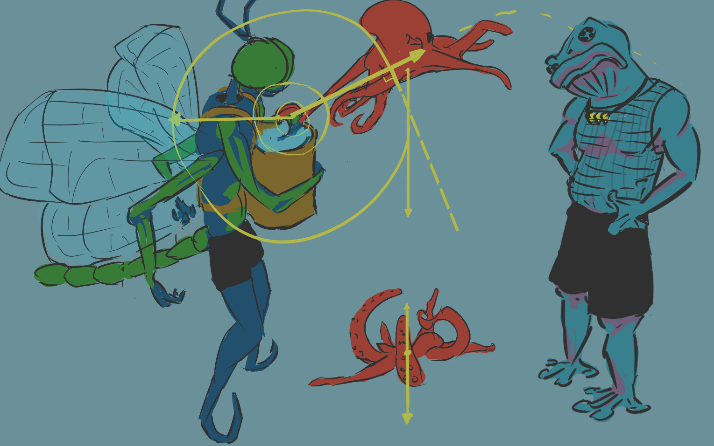
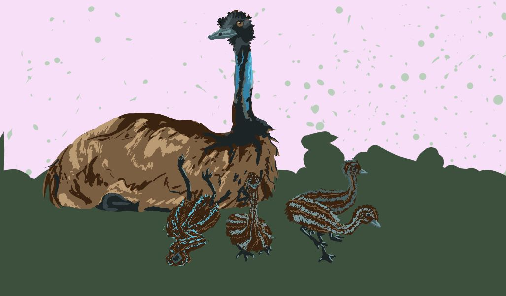
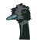
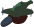
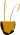
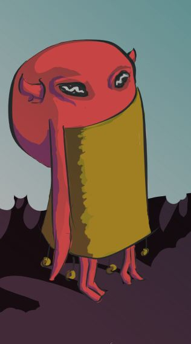

When I first left the sea, I was overcome with heaviness.
Four arms searched for drier land, two kept close to my body if defense was needed, and one dangled behind lost in what was happening.
All squirmed under the weight.
A white glare with a trail splitting the sky burnt my eyes down the middle.
I puddled like blubber and fumbled over the lollipop swirls of an air-facing reef.
On first look back to sea, I saw my world new.
I'd never thought my life as blue before.
Four arms searched for drier land, two kept close to my body if defense was needed, and one dangled behind lost in what was happening.
All squirmed under the weight.
A white glare with a trail splitting the sky burnt my eyes down the middle.
I puddled like blubber and fumbled over the lollipop swirls of an air-facing reef.
On first look back to sea, I saw my world new.
I'd never thought my life as blue before.

Moving further to a murmur inland, finds the source a jumble as I was, but unbending between joints.
Green, mostly.
Dark as black as parts got thinner.
Four uncoloured, thin fins stretched from it with fine, black lines searching for edges, and a limb of beads like a tentacle stuffed with pebbles stretching out from the inner bundling.
It wasn't until a fin slipped from its own grip that I noticed the hands - on arms as few as there were fins - relaxing from painting a fin red.
As it kept unfurling, a dual-bulbed head peeking outward.
The green, bulbous eyes took up most of the head and seemed rippled over themselves many times, like the reef pools hit by pinkish paint drips.
Two antennae, straight but tilting, signalled something I didn't understand.
All this was a strain to see in unfiltered light. I asked the thing in the best suface-speak I knew 'When would this blasted day dim?'
Over the slosh of the bubbling foam about the reef, I was not sure he'd hear me. My words felt sluggish and piled upon each other like the weed-ridden waves would overlap on the shore to make a louder crash.
Green, mostly.
Dark as black as parts got thinner.
Four uncoloured, thin fins stretched from it with fine, black lines searching for edges, and a limb of beads like a tentacle stuffed with pebbles stretching out from the inner bundling.
It wasn't until a fin slipped from its own grip that I noticed the hands - on arms as few as there were fins - relaxing from painting a fin red.
As it kept unfurling, a dual-bulbed head peeking outward.
The green, bulbous eyes took up most of the head and seemed rippled over themselves many times, like the reef pools hit by pinkish paint drips.
Two antennae, straight but tilting, signalled something I didn't understand.
All this was a strain to see in unfiltered light. I asked the thing in the best suface-speak I knew 'When would this blasted day dim?'
Over the slosh of the bubbling foam about the reef, I was not sure he'd hear me. My words felt sluggish and piled upon each other like the weed-ridden waves would overlap on the shore to make a louder crash.

His response was rapidly paced like an accidental smack in the face, little time rested in each syllable.

"Some day before Oneday, I'd expect, but it's just become today, which is Twoday.
Threeday would be tomorrow, one before Sumday, the beforeday of the final day - which some call Fourday.
We'll be past that one come Oneday too.
Say, how'd you get yourself so red? I've been trying to render myself something saturated, but nothing sticks."
Or was something to that effect.
I had not fully caught the meaning as in my mind were flashes of fangs and floating shadows eager to bite into the whipped-icing of water froth about.
I stutter airy words I barely understand between each slap of wave.
I had not fully caught the meaning as in my mind were flashes of fangs and floating shadows eager to bite into the whipped-icing of water froth about.
I stutter airy words I barely understand between each slap of wave.

"Danger. Lessen your hue. No nook, no crevice. Quick now, trade the trash in bag for water and carry me within."
In a way I would come to know well, he froze a moment, quizzing over how he would move each limb at once, then launched into awkward motion.
His chatter continued as I scanned for cover.
His chatter continued as I scanned for cover.
"... what she would've wanted I'm sure ... It's a waste to wait for weight to be useful and it's always better that the weight you carry makes life lighter for another ... I could never use these as she did anyway..."
The water was more colourful then, as he fumbled me into the carrier.
I don't think he noticed that, with my arms flailing as they were, and I didn't take on the meaning of it then.
I don't think he noticed that, with my arms flailing as they were, and I didn't take on the meaning of it then.

But he did linger for something there...

His lack of panic only stressed me more.
"Good reef, jet now! Flap the fins! Go!".
"Oh, I couldn't possibly fly with an un-dry pack. Maybe nutterflies could muscle that mid-air jostle. I can only fly precise and without whimsy. I think that's why I always end up somewhere so far from them. I was thinking brighter wings might help them find me."
"To fly is swimming above water?"
He thought on this further than the yes or no that I expected.
"I wouldn't suppose, but who really knows? I have not swum where you've come from. I was water-bourne, but in a much different body and mind. Looking to see the sights? I tend to stumble more than walk so it will take some time, but as I trundle we may talk, if you're the social kind."
"You no fear predator?"
He did not stop to think on this.
"No I don't. If something is rushing you, please trust I'll find someone to help, but now no solution stands but a slow walk. I beg your forgiveness."
I had no choice but to agree, and his certainty did calm me.
"What is name for this place?"
"Aye Dunno."
I'm realizing now I might have misunderstood him there.
"Is this the place that has become wrong? I must see there."
"I'm not sure what you mean, things have changed since I have been but wrong or right is hard to say. I'll go forward, pulseward, because it is hard to think things wrong under stars, so pulse light will help you see what you seek."
"Something runs into the ocean near and does not stop. It must stop."
"Near in reach? Then we'll search the beach."

I'd not seen anything but sand and cliff-face for a long-time.
Each step had a plume behind like a clap of a flour-covered hands.
Among much information I've forgotten, he told me his name was Anisoptera - but he prefers Aesop.
I shared mine as Haliphron.
He would call me Hali.
He did not walk evenly, his fall was little surprise when it came.
I was less struck by the ground and more by him finally shutting up.
Something frightened him, but it was a familiar sight to me.
An armoured warrior, much wider than he was tall (though still he looked down on Aesop and I when he was standing), with massive claws and a shield on his back.
But he was covered in a lichen, a tangle of deepest black over him when compared to the sugar-piles of sand dunes.
He was not moving much, Aesop likely mistook him for a rock until he had shifted to turn away from us.
Aesop must have overlooked the moment to think about controlling his limbs, his wings were abuzz.
I knew now how he looked when he was panicked.
The water that spilt from the bag dissolved the grains below me and seeped further down.
I was stuck in a small and quickly drying pit.
Each step had a plume behind like a clap of a flour-covered hands.
Among much information I've forgotten, he told me his name was Anisoptera - but he prefers Aesop.
I shared mine as Haliphron.
He would call me Hali.
He did not walk evenly, his fall was little surprise when it came.
I was less struck by the ground and more by him finally shutting up.
Something frightened him, but it was a familiar sight to me.
An armoured warrior, much wider than he was tall (though still he looked down on Aesop and I when he was standing), with massive claws and a shield on his back.
But he was covered in a lichen, a tangle of deepest black over him when compared to the sugar-piles of sand dunes.
He was not moving much, Aesop likely mistook him for a rock until he had shifted to turn away from us.
Aesop must have overlooked the moment to think about controlling his limbs, his wings were abuzz.
I knew now how he looked when he was panicked.
The water that spilt from the bag dissolved the grains below me and seeped further down.
I was stuck in a small and quickly drying pit.
"A thousand apologies Hali, I could never say sorry enough. I cannot carry unspilled water to you by wing and I cannot best this monster. Oh, how quickly I make everything wrong. You were looking for a wrong-doer, me you have found."
I had enough arms to grab all his shoulders and turn him to face me.
The little surface-speech I knew at this time I learnt during ink-trade, so it should be no surprise that the following words I gave Aesop weren't composed by me.
But I remembered them.
The little surface-speech I knew at this time I learnt during ink-trade, so it should be no surprise that the following words I gave Aesop weren't composed by me.
But I remembered them.
"You will fly to the sea and walk water back to me. I will dry, but survive 'til your return."
Upwards at 45 degrees, his takeoff needed no correction and I was alone with the soldier.
I tried to soften my speech as it would be in the waters.
I tried to soften my speech as it would be in the waters.
"Forgive the simple friend. Means well but much to know. I am Haliphron."

"I am Brachyura. You seem the simple one, your friend sees me for the monster I am."
"A monster as food for what can't hunt? Has disease dried your claws unbent? I could remove -"
Before I finished speaking, he rose on his many shaky legs and began sidling away.
"What you want to kill is just trying to live. Leave me be."
His legs carried his body but his claws were as anchors.
He couldn't move further than his arms length.
He couldn't move further than his arms length.
"Leave me be."
"Not only you diseased. You've shorely seen. There is wrong in ocean floor. Lying on seabed like heavy water, but it tastes overly sweet and makes each breath hurt. Waving it away spreads it, but it collects on floor again. Not like your disease, which I can pick and clean. I help you, you help me look for source?"
"You are after the monastery. Up ahead is a cave you can pass through, the monastery is up the cliff at the exit on the other side. Now, leave me be."
"I wait for friend, I cannot leave water as long as your kind. Could clean you while wait."
"Why would you deprive the disease of its food?"
"Because you more worthy. I reason and speak with you. No disease does that."
"If we are speaking with each other, why are you not listening? Leave me be."
I did not know what more to say, so I sat quiet until Aesop returned.

"My flight out was single-minded and untimably quick. The walk back was slow and fraught with nerves at the many things I might end up seeing. It would be redundant to cry the same water I bring, still I might. As you live I am indebted. I'd given you not enough credit, who'd've knew you'd be a monster tamer?"
"Brachyura not to be feared. Put me in pack again. Careful. Don't pull at arms. Cradle me. Cradle, I said!"
I was rasping then, I did not want to move my dry and brittle flesh should it crack.
"He has told us where, a cave ahead."
"But he wouldn't just let us pass through the pass. He would want our bones or our blood or something?"
"What I want I cannot take. Your departure would be the kindest gift."
Aesop jumped an exact vertical on hearing Brachyura speak.
"W-W-We don't have much with us - I had to dispose of my treasures recently - but we could return with what might satisfy your hunger?"
"I am not the hungry one anymore. I am the one worn down. Leave me be."
Maybe the weight I felt, Brachyura did too.
I suspected then we both knew the sea well.
So when I suggested the water for a lighter feeling, I felt foolish and saw he thought me this also.
I suspected then we both knew the sea well.
So when I suggested the water for a lighter feeling, I felt foolish and saw he thought me this also.
"The water has become too thick. I am too tired to swim, the tired can only sink. Sinking I am use to. Leave me be."
I don't often get angry.
At this I got a little angry.
At this I got a little angry.
"If thing cannot swim, why let drown? You cannot lift your claws. You cannot stop me helping."
He protested, but all my arms were agreed, and - no longer dry - I cleared him of decay quick.
His arms strained but his claws never left the ground.
His arms strained but his claws never left the ground.

His voice held the defeated monotone.
"You took the wrong parts. My claws are the cancer. They are only good for pain."
"You haven't held them as helpful before? Claws can be clumsy, but brute force can be held creatively."
"You who float in sky and sea don't understand. Please, prove me wrong and tell me what my claws can do for you."
At the time I thought Aesop was changing his chromatophores, but I know now he doesn't have these.
It must have been his eyes reflecting the pulse in the sky which was shrinking further away and shifting red.
His eyes were a bit like water then, probably reflecting the shimmer.
His voice was unsteady too, likely tired from the walk.
It must have been his eyes reflecting the pulse in the sky which was shrinking further away and shifting red.
His eyes were a bit like water then, probably reflecting the shimmer.
His voice was unsteady too, likely tired from the walk.
"If truly the claws are the cancerous cause - I have a friend at War's End, a sculptor that removed a part of themself. They might help you reason whether you will be more yourself with less or less yourself with more. All I know is I'd rather a world with or without your claws as long as the world has you."
I probably should have stayed quiet, but I knew how it was being short a limb and felt the need to question practicalities.
"But how would you eat? Can you not like you as you, with all that power? Removing from you makes you less you."
"I can eat the leftovers. The waste. Join the bottomfeeders. I'd rather lose than claw my way to the top. A life without claws isn't scary until someone else's claws get involved. Someone like me. If I became different, what would I call myself?"
"My friend retains their name. If you're not for the same, choose whatever you like, others only have to ask to know."
Aesop was standing within reach of Brachyura now.
I don't think Aesop realised him as incapable of reach yet.
I don't think Aesop realised him as incapable of reach yet.
"If you can't find strength to find the sculptor, you can find your claws con help if you come with us."
"No, I must go anti-pulseward or nowhere, as I have been behind me and I'd know what I'd find there."
Brachyura looked to me.
"Your simple friend is wiser than you think. Heed your own words, with so many places one could help another find their footing, sink or swim is a pointless phrase indeed."
Some distance along the cliff-face, before entering the cave, we looked away from a pulse in the sky shrinking to nothing, toward a pulse at the other end of the sky growing from nothing.
We saw only two deep grooves in the sand like two worms had eagerly skimmed through ice-cream.
We saw only two deep grooves in the sand like two worms had eagerly skimmed through ice-cream.

Once through the cave, the sky was dark. The tunnel was like many lengths of chocolate blocks molten then solidified together, so that no light would pierce and have told us how long we had talked in there.
We talked of things so important it needs no written account to believe, nor clues to guess what they were.
At the tunnel mouth, where the running chocolatey walls are slowing under a cool breeze from a dark sky, it seemed wrong to talk of these things further.
Aesop had put the frontpack I occupied onto the ground and crouched in silence for a moment.
He raised his upper set of arms and held a finger out in front of each eye, his lower set held his hands in front of his abdomen.
The fingers at his stomach closed and opened while his arms held out to the sides of his face moved as if they were pulling a stretchy, invisible string through his head, side to side.
He then froze in place as his antenna twitched about his head.
We talked of things so important it needs no written account to believe, nor clues to guess what they were.
At the tunnel mouth, where the running chocolatey walls are slowing under a cool breeze from a dark sky, it seemed wrong to talk of these things further.
Aesop had put the frontpack I occupied onto the ground and crouched in silence for a moment.
He raised his upper set of arms and held a finger out in front of each eye, his lower set held his hands in front of his abdomen.
The fingers at his stomach closed and opened while his arms held out to the sides of his face moved as if they were pulling a stretchy, invisible string through his head, side to side.
He then froze in place as his antenna twitched about his head.
"Twoday is coming to a close. I didn't think we were in the tunnel for so long. The pulse leaving is only one-fourth larger than the pulse oncoming. They will start lighting the stars soon, when the pulses are equal and we are at the median."
"Why light stars at the median?"
"So it is clearer which way the pulse moves, for some it is hard to tell when the pulses are small and far off."
"But not you?"
"It is easy for me. I can see them both at once. I can see everything. As I look at you, I can also see the stars begin. Look up."
I looked up to see small green dots appearing across the sky, some were clustered togther and some were lonesome and distant.
Some where strong and clear, others I didn't notice until holding my sight on the darker places for some time.
Some where strong and clear, others I didn't notice until holding my sight on the darker places for some time.
"Who lights them?"
"Those of us who don't travel, so the travellers can find who they are looking for. They shine it down for us so we shine it back up to them."
"Have you been to see a starlighter?"
"Not the ones above. It is a long way to fly. But it can be done and I have known someone who has. And I have seen starlighters nearer where we are, some at the sides too."
I considered who might have flown that far, but Aesop was laying down to rest and I felt I had few questions left.
"How long is the median?"
"For length in time: what was taken for the pulse, from when it was above us up to now, will be the same amount of time from now until the next pulse is above us. For length in space: I do not know."
"If the monastery doesn't move, would they be starlighters for those above?"
"Probably."
"Are starlighters kind? They sound kind."
"The starlighters want travellers to be able to find them, and travellers want to be able to find starlighters. All are kind to that end."
I thought about the points of light I might find in the sea.
"The starlighters of the water aren't kind."
His antenna twitched as if in a dream.

I woke to a gentle shifting of my water-filled bag. Two of my arms felt the hands of Aesop at the straps so I was not startled.
It was when I heard him whisper to not make a sound that I became afraid.
Reaching out my arms I felt nothing but the forgiving reshapings of earthen trifle under the crumbling flakes of a dirt crust.
Opening my eyes I saw at the side of the cave mouth a white and pink thing of a great finspan - the fins seemed to have long bones within to keep them spread.
The body of the creature was a small thing in comparison and could be wrapped up within the fins. Still its stomach was likely large enough for both Aesop and I to be a full meal.
The head was snouted with small, sharp fangs covered in a yellow slime which a long tongue is continuously lapping up.
Less noticeably next to it was a cloak, black as a starless median sky but with similar white strands and pink flaps of a creature peeking out from within.
The one in the dark shroud seemed the only one speaking as the other was transfixed on drinking up the stream of thick and yellow sludge.
It was when I heard him whisper to not make a sound that I became afraid.
Reaching out my arms I felt nothing but the forgiving reshapings of earthen trifle under the crumbling flakes of a dirt crust.
Opening my eyes I saw at the side of the cave mouth a white and pink thing of a great finspan - the fins seemed to have long bones within to keep them spread.
The body of the creature was a small thing in comparison and could be wrapped up within the fins. Still its stomach was likely large enough for both Aesop and I to be a full meal.
The head was snouted with small, sharp fangs covered in a yellow slime which a long tongue is continuously lapping up.
Less noticeably next to it was a cloak, black as a starless median sky but with similar white strands and pink flaps of a creature peeking out from within.
The one in the dark shroud seemed the only one speaking as the other was transfixed on drinking up the stream of thick and yellow sludge.

"The others have found a fruit tree, we don't even need to hunt for it, come on. You can't live on this stuff, you've gotten so thin."
Aesop was pulling me in the bag behind a rock that was tall enough to hide us both.
These creatures were about as large as all my arms put end to end, they probably wouldn't have noticed things as small as us anyway.
These creatures were about as large as all my arms put end to end, they probably wouldn't have noticed things as small as us anyway.
"It is already light out. You should cover up, you know the others laugh at us when they see us without our cloaks. Do you want them to laugh at you?"
The other continued to drink.
"Desmod, if you cared for me, you would help me try care for you. You're the only one who understands what it is like-"
The drinking one, Desmod, flapped a fin to waft a current of air that billowed the black coat the other wore, who promptly wrapped it about herself tighter.
Again Desmod drank.
"I'll destroy it."
Desmod wiped his mouth and wrapped himself in his fins after a look of disgust, cutting off any talking to the other.
The one cloaked in black came to sit on the rock we hid behind.
Aesop let out a little buzz. The creature seemed not to notice as it muttered to itself.
The one cloaked in black came to sit on the rock we hid behind.
Aesop let out a little buzz. The creature seemed not to notice as it muttered to itself.
"Why shouldn't I? Everything was better before the honeycomb monastery."

"How would you destroy it?"
Aesop's wings buzzed louder.
What? I wouldn't. What? Who are you?
The shrouded thing stood and rose to its greatest height, pulling the black cloak around it tighter.
Something my people would do when we wanted to appear scarier than we were.
Something my people would do when we wanted to appear scarier than we were.
"Friends. I'm Aesop, she is Hali. We can help you talk with those at the monastery."
"Is it weak?"
"How long have you been trespassing in the cave of Desmod and Chiro? Our hair may be blackless white, but our teeth remain just as strong as the rest."
He gnashed at the air, probably to intimidate us but it only deflated his posture.
"Are you going to leave or what?"
"This golden plague upon your friend is a hamper to mine also. We would help as much as we can. Streams have a source, rivers be dammed."
"He is my brother, not my friend. What help could such little things as you be?"
"Does this join with the sea?"
"You mustn't have been far from the cave mouth yet."
We followed Chiro out the tunnel mouth to see the cliff-face covered in shining and slow-moving rivulets of yellow, a lavaflow of molasses.
It amassed into thick pools on a short beach, eventually crossing into the ocean.
It seemed like a seaside waffle tower drowning in syrup nearer the water and drizzled caramel on a many-layered cake at the higher, dryer parts.
It amassed into thick pools on a short beach, eventually crossing into the ocean.
It seemed like a seaside waffle tower drowning in syrup nearer the water and drizzled caramel on a many-layered cake at the higher, dryer parts.
"Since the stars started up again after the war, this runoff has just gotten worse and worse. The humblebees of the honeycomb hanging from the top of the cliff don't let us close. All together they are a frightening bunch."
"You have been near? Did they say much that you could hear?"
"They speak loudly, not that they need to as I can hear excellently - as all bats can."
Chiro flittered the cloak about themself, admiring the way it trailed.
"We make many noise and still you made surprise face."
"Ok, fine. I'm a terrible bat. I can't fly around at night as I cannot hear the walls and I can't fly safe in the day being an easily spotted black shadow. I can't get anywhere near that hive before the bees know to swarm. I'd like to see you do better!"
"But your skin is the colour of the cliff-face, why should you be a dark shadow? Do you wear your cloak through air? Nevermatter, I've a plan at hand. I know Hali can handle fearful things like you, but I won't be gone for long anyhow."
Aesop had gone before Chiro or me had the opportunity to question.
Not long after, the empty space he left at the tunnel mouth began to fill with flowers whirling like helicopter seeds from the sky to matt the ground with a rainbow of petals.
Not long after, the empty space he left at the tunnel mouth began to fill with flowers whirling like helicopter seeds from the sky to matt the ground with a rainbow of petals.

Aesop, on his return, interrupted any questions with an immediate explanation.
"I cannot fly both Hali and I up there together as I cannot carry the watery pack by wing. I couldn't go there on my own to explain a situation I do not understand well myself. I wage it's been an age since you've flown when less your cloak. A dayflight up with your natural skin would be a disguise in itself and get us nearer. And when we have sneaked close enough that they do notice us, they will be unseated from their natural response of fear - replaced with surprise - and we will have a ring of flowers about your neck as gift."
There were many words said by Chiro that could easily be boiled down to 'No'. When her words started, the pulse had only partially lit up the sky. The pulse now was glaring down overhead.
Even still, he could not out-talk Aesop.
Even still, he could not out-talk Aesop.
"...If they wake up to see me doing this... I - My brother and I aren't like the other bats, as I've said. This cloak makes it so they let me be around them."
The flight to the beehive was a blink of an eye in comparison to the complaining beforehand.
The ride on the back of Chiro was half through the air and half an arduous climb as she navigated the fluid that got thicker and thicker as we got closer.
But just as Aesop said, we got close.
When an individual bee at the outskirts noticed we were there, we were able to explain to them before a swarm was called.
The ride on the back of Chiro was half through the air and half an arduous climb as she navigated the fluid that got thicker and thicker as we got closer.
But just as Aesop said, we got close.
When an individual bee at the outskirts noticed we were there, we were able to explain to them before a swarm was called.
"We bring gifts of friendship. I am Aesop, She is Hali and the one who lifted us to your heights is Chiro."

"I'd have preferred the flowers be left to flower further, but I think I can overlook reality for the gesture this was intended to be. If you'd like to be a guest, you may do as guests do and enter. I will be waiting in there to greet you. I will also have to wait out here with the larger one of you, I'm sorry I couldn't accommodate your size, Chiro."

There were bees standing guard, bees playing on the patches of flora on the cliff, and many more bees crawling over the walls within the hive, arranging pockets of viscous orange liquid and tiles that seemed a hardened, or sometimes jelly-like, version of the same substance.
Another bee appeared expecting us at the hive entrance.
Another bee appeared expecting us at the hive entrance.
"It is an exciting time you chose to visit. I have finally moved the manufacturing of a telescopic lens into production that will help me test a theory that the world is a donut plane."
"I - Hello, I am Aes-"
"Yes I recall your names. No-one in our known history has yet cohorently defined the shape of our world, so navigating it is a confusing task, aside from saying you are following the pulses or going against. If you're lucky, the stars haven't changed much in a generation. But what if you don't go along the pulse and instead to the side? I call this angle from the pulse direction the spin angle. Many say you can't really move that way as they don't see it affect their distance from the pulselight but we do seem to be able to move from each other that way. Maybe the pulselight wouldn't change as we expect. What if the pulselight sees what we thought of as lateral movement as a rotation instead, a walking around it like it is a sort of center to things. With this theory, you can get back to where you are even quicker by an entirely different path. If we live in a donut plane, we can fix our great supply chain issues by calculating the ideal spin angle for the fastest pathways the chain can span for pollenation and delivery. Everyone could even change where they live based on the spin angle that gets them a better line of delivery for what they need as everything constantly circulates, like a rotating helix about the pulselight. And for those of us with wings, we could fly directly into the sky and it would be the same as walking a greater length around the pulselight-".
The bee we were talking to suddenly flew away to an upperchamber, and another stepped out of a nearby archway addressing us.
"We all know there is a relationship between the pulse distances, but we've been mistaken in thinking there are multiple pulses. You see the pulse doesn't go forward and shrink to nothing for another to appear from nothing. It is eternal and always returning. As it moves away infront of us, it is also getting closer behind us. It is moving in a circle which we all live within, but we're seeing the circle as an infinite straight line of repeating parts."
"But - what you have inked on the wall - if the donut is curved why do we see a straight line?"
Again, the bee left before Aesop finished the question, but another bee behind us started answering.
"Oh. I'll go back a bit. This drawing is a diagram - made with the help of ink from the people of your red friend here - of our world, only in the same way a circle can represent a sphere with a little shading. If you take the image to a higher dimension, it is obvious. I have recently used a mixture of honey in a process of extreme, repeated heating and cooling in thin sheets to produce this pair of magnification cells."
The bee had walked us into a thin but tall hallway where the walls were a semi-transparent glass candy, staining us with a warm, orange light.
"If I layer enough sheets of honeyglass at the correct concavities, the pulselight that bounces off the back of our heads should shine through it with enough intensity such that it circles (in a straight path along the shorter spin axis of our torus plane) to return back to the same place from the other direction. We would see ourselves looking at ourselves. Not a reflection. Not a projection. Literal reality from two directions just like the pulse light does - but over a shorter distance this time. Comparing the length of the short spin-axis measurements with the long spin-axis which we get from the pulse itself, we can know the total volume of the whole sky. Entirely measurable. Imagine what we could do when everything is measurable!"
I gestured to Aesop to try direct the bee to what was the more important topic. I knew my loose grip on surface-speak would struggle to keep up.
"We are here about the honey you let drain to the sea. Hali has endured this trip to explain how your excess honey has impacted her sealife. We have also promised a friend to try contain the supply of what has hooked her brother into an addiction. Is there any way we can help divert or reuse this runoff?"
"Ah.
I cannot slow honey production.
I'm anxious that the great supply chain will fade if I don't keep the ants and termites busy with a growing threshold.
They tend to wander when sugarcane wanes, you understand.
If the great supply chain becomes weak at even one link, pollen collection will become unorganised and many will not receive what they need to survive, nor their upcoming generations.
I am a slave to this requirement.
You're asking me to let bits of me die instead of grow, I don't have a grasp on what such a thing means for me.
But if you can provide us a way to utilise this honey run-off - a way to store it and offload it - this may please all parts of me enough to implement it. I would like to keep good relations between your peoples and I.
I see this threatens me, but I don't think the runoff is at all useful in preventing the threat and I don't know what I can do to change this perspective when this control over my own decay is entirely new to me."
I thought now might be a decent time to share the translation of something I had prepared.
"Your unbalance is my unbalance.
The shallows of home are draped in stinging tentacles as jellyfish are moving inland to feed on this offrun.
The crab guard which bordered us from the toothed-hunters abandon their posts with the difficulty of living in the honey smog.
The ink we provide you is getting harder to share."
Another bee took our attention as the previous flew out the entrance.
"I will carry what you want me to say to all of me, to ask me to live with less, but this will change nothing.
What each part of me does is not in my control.
Please believe, you have my pity.
Please believe, most of me wants it to be different.
But I exist where I cannot be touched.
I don't bleed or starve.
I am the result of the rules that makes my parts not want to bleed and starve.
If an ocean's wave understood the rules of its tides as a result of the changing heat of the pulse and inhalations of the porifera inside itself, do you think it could change the tides' direction?"
I am not an angry or reactive being, but I felt a temper in my voice as I continued to explain.
I recalled the surface translations of our greatest works.
I recalled the surface translations of our greatest works.
"The hatchlings know no magma vents, they went cold and dark a cycle back.
A haunt of lights are rising from the lowers and luring the edge-folk at the trench drop-offs.
The great shelf current has split to minor streams such that travellers are flung into voids of biological deserts, never to be seen again."
The bee seemed to be trying to pull away from the grip of my arms.
"The corals have rejected circulation and petrified to a stone unyielding and ungiving.
There have been six whalefalls in the last tide, it used to be a surprise to see one in many. What kind of herald are feasts on greater beasts that grows more frequent but thinner and thinner?"
I thought I was speaking with a calm and firm cadence, but must have been much louder as the room was active with the buzz of all the hive.
A significant feat as this sound can be felt as thunder.
There was chaos with a cause I was unaware of as I kept talking - or was I screaming?
A significant feat as this sound can be felt as thunder.
There was chaos with a cause I was unaware of as I kept talking - or was I screaming?
"Like the parasites, you gorge without a worry of the ancient sponges' tomorrows.
When they choke and the deep sputters up and you drown in gold and blue you will weep only to rise the tides further and I will not pity you and the ocean will not notice your sighs of terror and misfortune."
A flood of honey spilled over the lip of a giants' goblet through a hexagonal archway to muffle a rising pitch to a groan.
I felt like I was being split apart and squeezed through the holes of a net.
The hive could have been freefalling sideways away from the cliff to follow the pulse's wake.
I saw a bee holding a trident of black stingers pointed to the unseen sky, like war has been declared on all light source itself.
I didn't know the direction to which I talked, but I continued.
"The skeletons of the seabed will come unburied and spear every creature with the force of an eternal tsunami. You will come to know the crushing weight that has worn the stygiomedusa to a membrane. You will learn of the sting of cnidarian venom and you will hear my laughter in the dark home of the magnapinna that will cover the entirety of your life. You will feel the black like an eel swarm with their unclosing eyes and swirling bites.
You will have no choice but to merge into a freakish, monstrous siphonophore with the decaying parts of your friends and loved ones and you will not recognise them, let alone yourself."
A darkest shadow hid the sky, lurching in front of the hive entrance and many bees abandoned insanity to heed an unheard command to suffocate within a yellow-orange sludge.
Mangled wings poked through molten jelly, like egg-yolk broken over multi-rowed, rotten shark-teeth.
A ball of light dangled above.
Perhaps distant.
Perhaps not.

Going to the top of the cliff was faster than back down. Chiro alighted there, Allowing aesop and I to touch ground and talk (well aesop touched the ground as he carried me in the pack, of course).
"After all that - no blame on the bat - the bees are not likely to enact our wish."
"They never would. We must remove choice. They say supply chain is weak. We can break. How long of flight, Chiro?"
"I cannot take you, I must care for my brother. It is light and I am tired. The many stings will make the long way down worse. Do you return with me?"
"We'll not trouble you with more of our rabble. The vantage point up here is an advantage, besides. Farewell. Forgive the sentiment but you'll not know what your help meant. We cannot repay tomorrow what we borrowed, but... eventually."
"Call on me the next time you travel the tunnel. I hope to be happier then."
Chiro's flight away was a clamber in a way Aesop would never.
Aesop turned so we were both looking away from the sea.
Aesop turned so we were both looking away from the sea.
"Maybe it is different in the water but here there is peace many sought for.
There wasn't for a long time, rhyme has said, though I've been cautioned rhyme's oft improportional.
But I don't need words to convince me, since I see it all around. Could I be seeing so much I've stopped thinking?
Have you noticed the lake that takes the side-length of mushroom county, it froths like the simmering of warm milk before bed.
It feeds to a delicate spiking of chocolate spires pittered with holes housing whole mountains of talkative termites.
See them rise in organised compromise, where their edge is a barely-taken bitemark on the edge of a cookie, left for others to share the taste.
And like crumbs in many number skittered from heat-soaked rock to shrubbery frock that dresses the foot of the sea-shell mountain, lizards and geckos littered on stucco have savoured no more than morning light allotted.
The fleeing pulse has angled its shadows, so shading green is the shallow and cool black is the deeps of the swamplands, where birds and bullfrogs are happy to sing all day for you.
I'm told their singing follows the beat of the drumming emus, a summing in melody and constancy to move an evening along.
That sound must scale the tower of spine keep, where the magus platypus preserves the gentle grazings of all echidna. Observing the farm always, except to see the pulselight wink at him from white to pink purple to to black each night.
Amazing as that is, a dotted line of arms wave about it, an army of ants make work instead of war. The great supply chain whose ends cannot be seen from any ground height."
"As you do not suffer, someone else has ontook it."
Aesop, nodding, had his antennae work and tilt about his head for a bit then began to walk us somewhere.
I wasn't used to needing to ask Aesop the obvious.
So I didn't.
I wasn't used to needing to ask Aesop the obvious.
So I didn't.

No-one else wears their feelings on their skin like I do.
I was tinted the grey-white of a newly scuffed reef but Aesop made no change in return.
I considered maybe he didn't notice, but this was a silly thought - he sees everything.
I had misjudged my trust for Aesop, we were too different. This was never going to work.
He would break the promise he made in the middle of that long walk through the tunnel, no matter what we had confessed in there.
When he walked directly up to the bullyfrog, the betrayal was undeniable and I prepared to rush the nearby pond.
I was tinted the grey-white of a newly scuffed reef but Aesop made no change in return.
I considered maybe he didn't notice, but this was a silly thought - he sees everything.
I had misjudged my trust for Aesop, we were too different. This was never going to work.
He would break the promise he made in the middle of that long walk through the tunnel, no matter what we had confessed in there.
When he walked directly up to the bullyfrog, the betrayal was undeniable and I prepared to rush the nearby pond.
"You are to guide us through the bushland, frog."

"The name's Pyxicephalus, babe. And I'm not to do anything I don't want. Get lost."
Now.
"Wha-"

Three arms were launching me from the bag, three were reaching out for a landing, but one was clutching the hand of Aesop.
My jump, achingly slow, circumnavigated the arc of a circle centered at the clutched hand, to land at Aesop's feet.
A brief silence as the other two stood towering and expectant of explanation.
The bullyfrog caught me and held me aloft, outstretched in one hand.
My jump, achingly slow, circumnavigated the arc of a circle centered at the clutched hand, to land at Aesop's feet.
A brief silence as the other two stood towering and expectant of explanation.
The bullyfrog caught me and held me aloft, outstretched in one hand.
"Ugh. You've ruined my shirt. Disgusting. You're lucky it didn't get on my candy-necklace or I might have gotten mad."
I was wrapped about his arm so tight that on the recoil as he tried to pitch me across the marsh, I hardly moved at all.
Were it a lob instead, I might have gambled on the release.
But then he gripped me back.
Were it a lob instead, I might have gambled on the release.
But then he gripped me back.
"Fine, you aren't going anywhere. You'll explain what you did to her handiwork. I won't have her think I disrespected her craft. Do you know how much care she put into it? It must have been... was it- how many ants past was it? What was her name again?"
The frog was mumbling to himself now, it became increasingly unclear about what.
He was wiping at a dark sludge he must have gotten on himself. Maybe it was on him the whole time, it seemed nothing to do with me.
He was wiping at a dark sludge he must have gotten on himself. Maybe it was on him the whole time, it seemed nothing to do with me.
"We could clean your shirt for you. The pond will do wonders. Please, allow me."
The frog spun to see Aesop with surprise.
"You! Did you do this to me? You threaten the purity of my pond? I am Pyxicephalus and you will not taint my waters with your filth!"
"... I would never. A careless, passing dung beetle rolled by, you must recall. I would have chased it down to chastise it rightly, but based my worries on you alone."
"Right. Yes. But of course you were wrong! I need no help from the likes of you and that beetle should not have been left free to trail a mess! You fool! What-"
He noticed me while he gesticulated as if he had as many arms as I.
"What is this thing on my hand? Get it off."
"Of course, it is nothing more than a malformed tadpole. Put it in here and pay it no mind."
Given a series of events where I struggled to follow the logic, I wanted to make a choice that seemed logical.
I returned myself to the bag.
I returned myself to the bag.
"Oh, what would she think I was thinking? She never believed I love it as I do. Now she will believe it even less. Her honor is besmirched, we must fix this- Your name, what was it?"
"Aesop, Sir. I know what we can do, but how much time do we have until she comes here again?"
"She comes in the dark when the mushrooms at the decaying stump glow the same colour as my skin. We will hear her harp song beforehand. What must I do, friend Aesop?"
The pulselight was distant again, Threeday starting to close out.
As that main light source waned, the pulselight was now serving to extend and frame shadows instead of stifle them.
The mushrooms did begin to glow so similarly to the skin of the bullyfrog that he looked like a flat and textureless drawing, laidback and still - except for his chewing on his necklace.
Aesop was barely visible aside from brief flashes of refracting lights on his wings and exoskeleton as he worked and stretched at the weaving of the shirt.
As that main light source waned, the pulselight was now serving to extend and frame shadows instead of stifle them.
The mushrooms did begin to glow so similarly to the skin of the bullyfrog that he looked like a flat and textureless drawing, laidback and still - except for his chewing on his necklace.
Aesop was barely visible aside from brief flashes of refracting lights on his wings and exoskeleton as he worked and stretched at the weaving of the shirt.
"This is ill-informed, friend Aesop. You will surely damage it. I cannot let you continue. There is something missing."
The bullyfrog twisted the nodules of candy on his necklace, as if, within, he might see what is missing.
Aesop had tasked me to hold the web-mesh of a shirt tightly wound on a tree branch as he stretched the strands across to other shrubs and the like.
Aesop had tasked me to hold the web-mesh of a shirt tightly wound on a tree branch as he stretched the strands across to other shrubs and the like.
"Of course sir, I understand why you would conclude as such. While you would clearly understand the faultless action of threading a shirt tight enough that the dirt will be flung from it in a pluck, you must be doubting my ability to do so with my limits of dexterity."
"Indeed."
"Have no fear, sir, if I cannot clean this garment without dirtying the pond, I will lay my self at the feet of her, for use as she sees fit."
"You think she will accept your body as equal to her work?"
"I can only hope she will be gratious in something lesser. If only I were more like you, sir."
"Indeed. I permit you to admire me further."
The bullyfrog rose to pose, but turned to the air as a harmonic ringing sounded.
Something dark shifted out of the trees and called to the bullyfrog, that something asked if they could still passby before she gets here.
Aesop had picked me up in the bag and was already making off, before the frog could turn back to see us.
In the distance, I could hear the frog panic that the other shouldn't be there, but you could also hear uncertainty in his voice about ushering him on.
There was a bit of a scuffle and then a competing of untuned twanging against the harmonic strings that have since stopped with a screech.
It was the closest a walk ever got to a run by Aesop, from what I remember.
Something dark shifted out of the trees and called to the bullyfrog, that something asked if they could still passby before she gets here.
Aesop had picked me up in the bag and was already making off, before the frog could turn back to see us.
In the distance, I could hear the frog panic that the other shouldn't be there, but you could also hear uncertainty in his voice about ushering him on.
There was a bit of a scuffle and then a competing of untuned twanging against the harmonic strings that have since stopped with a screech.
It was the closest a walk ever got to a run by Aesop, from what I remember.

We woke hungry.
Or at least I did. I can only assume it was the same with Aesop, it is hard to tell with him.
Or at least I did. I can only assume it was the same with Aesop, it is hard to tell with him.
"Whatever is back there, is food in what is left?"
"The only safer way is down the valley, we might find food there, if lucky."
"I am sorry."
"What for?"
"Unsure. But I feel it. You plan to leave alone? I understand."
"Why would you think this? Am I acting outside of your interest? Have I digressed?"
"I do not know. All I know is you have plan. You always do."
Aesop's antennae went from rigidly tall, to a twisting and bending tangle.
Within the water of the bag, I was lifted, and Aesop started the trek down a swampy slope.
Within the water of the bag, I was lifted, and Aesop started the trek down a swampy slope.
"There is much to be sorry for, I feel it too. If we are to be in wartime, these feelings must grow few. But this is independent of the care I want for you, times will grow hard but I will stay true."
I sunk a little into the water of the carrybag, enough so that my eyes were hidden.
I don't think he expected a response, but I felt one was needed and still none came to mind.
There were many reasons I came out of the sea.
I think at this point I realised one of the reasons was to go to a place where I was more out of place, so that my isolation was justified.
But Aesop continued to not leave me and I didn't (and continue not to) know why.
The downward slope had bottomed out where a translucent, ghostly thing was tending to some flowering surface coral.
I don't think he expected a response, but I felt one was needed and still none came to mind.
There were many reasons I came out of the sea.
I think at this point I realised one of the reasons was to go to a place where I was more out of place, so that my isolation was justified.
But Aesop continued to not leave me and I didn't (and continue not to) know why.
The downward slope had bottomed out where a translucent, ghostly thing was tending to some flowering surface coral.

"Hail travellers, what brings you low? Forgive me for not rising to meet you, my joints aren't what they used to be."
"In truth, I am happy to rest nearer the ground. I've spent my food's energy and no more have I found. Hali is her name, Aesop is mine. If you'd rather us leave, just give us a sign."
"No, no, no. Take the time you need. And any of these fungal fruits, I tend them so that they can be used. I am Coptotermes of this: The Coptotermes' Garden."
"We have nothing to offer."
"Of course you do, and the garden will take it time, don't you worry. What you take it knows it will get back."
"You threaten? You must not know. The screeching of pulse-light past was our cause."
"Hali please, I have a mountain to climb yet. Forgive us, Coptotermes."
"No harm, no harm. It was no more a threat than an acknowledgement that Threeday gives way to Four. What I tend, it will take from me too."
We had fast eaten through most of the surface coral Coptotermes had passed to us.
It was without flavour, but hunger does not care of flavour.
Whatever deal we were making, our hunger agreed for us.
It was without flavour, but hunger does not care of flavour.
Whatever deal we were making, our hunger agreed for us.
"Why grow what takes from you?"
"Well I have something to give, and it is a privilige to give it to something I have grown myself. Otherwise I'd leave an empty shell. I can think of nothing sadder than an unused shell. Were it not for gardens like these, our world would be littered with the shells of war. The screeching of the pulse-past: is it something you took or something that was given?"
"I'm not sure it fits a category. I took nothing and gave nothing. But you have given kindness, I'll give to you information. The screeching would seem as the first blockage of the ant's Great Supply Chain by the Bushlands."
"Oh. My garden likes wartime far more than I. I didn't take you for the kind to like it either. Were you honest when you said you were the cause of it?"
"Hali speaks honestly. At least more than I do nowadays."
"The hungry want to eat, no matter the flavour. So much taken from me. From my mother. You want us gone?"
"By no means, you will need some more rest. Take as you like. The garden may seem meager now but you have given it a great gift it will reap."
Coptotermes stood with a shakiness.
She ran fingers along the caps of the fungus in her garden.
Iimilar, I imagined, to what my mother might have done to me and her other eggs as she was starving over her brood.
She ran fingers along the caps of the fungus in her garden.
Iimilar, I imagined, to what my mother might have done to me and her other eggs as she was starving over her brood.
"I think the only thing that can be taken without being given is a life. Surely things can be given unwillingly when faced with impossible choices. Giving can be a tragic act, as your mother and the many mothers of others surely know. Things can also be given through carelessness to thieves and the like. What the thief takes is given once the robbed stops fighting for it.
I think-
What I'm trying to say is-
You've given something once you've stopped fighting for it and the only way to not stop fighting for something and at the same time have certainty in having lost it... forever... is to die. Maybe that is something to consider, if it makes any sense. Your mother who was being taken from, was also giving to you. We can fight in a most self-destructive way at times. If you'll excuse me, I'm feeling a sudden tiredness."
I think-
What I'm trying to say is-
You've given something once you've stopped fighting for it and the only way to not stop fighting for something and at the same time have certainty in having lost it... forever... is to die. Maybe that is something to consider, if it makes any sense. Your mother who was being taken from, was also giving to you. We can fight in a most self-destructive way at times. If you'll excuse me, I'm feeling a sudden tiredness."
We decided not to disturb Coptotermes when we left her garden.
Aesop feared we caused her too much distress already.
He made me promise to remember a gift for her on the way back notwithstanding how incorrect we knew her remarks to be.
Once we started on our way, I realised Aesop was not exaggerating the mountain he had to climb.
Aesop feared we caused her too much distress already.
He made me promise to remember a gift for her on the way back notwithstanding how incorrect we knew her remarks to be.
Once we started on our way, I realised Aesop was not exaggerating the mountain he had to climb.

It took several cycles of pulse-light for the ascent.
Again we spent much of it hungry.
So too, the waters of my bag were vanishing (more so than spills and drips would've permitted).
Aesop told me water will vanish back to the whole of itself, when part of it is separated for too long.
How strange it is that things keep coming apart just to come back together, I thought.
Half the ascent, Aesop laid me down in my bag and spent the waning light-stride flying back to Coptotermes to replenish our food stocks.
Before he left, I scoured the sharp cliffs for shells of strength, precision and beauty that Coptotermes might use to tend her fungal colonies - they are a special sort at that height.
Oh, how fast he could have been without me, not having to endure the cumbersome and brittle, ancient seashells covering the mountainside. Like pins at his feet.
I'd not even thought of the pain of it until he had made the roundtrip. He hid that sort of thing well.
I felt too guilty to thank him, as I could never thank enough. Better not acknowledge that I am insufficient, I must have thought, maybe he hasn't figured that out yet.
I asked him of Coptotermes when he returned, but he said he didn't want to talk about it.
He said that he 'left the seashell shards where she would have found them'.
At the greatest heights, the titan shells jutted outward and shaded us as we heard the grind of appendages on the otherside of those dividing monoliths, footsteps or probings from spiralling bodies. I didn't dare look.
But, at the brightest of a cycle, I resurfaced on a stillness in the carrybag, hearing a voice I didn't want to be muted by my waters.
Again we spent much of it hungry.
So too, the waters of my bag were vanishing (more so than spills and drips would've permitted).
Aesop told me water will vanish back to the whole of itself, when part of it is separated for too long.
How strange it is that things keep coming apart just to come back together, I thought.
Half the ascent, Aesop laid me down in my bag and spent the waning light-stride flying back to Coptotermes to replenish our food stocks.
Before he left, I scoured the sharp cliffs for shells of strength, precision and beauty that Coptotermes might use to tend her fungal colonies - they are a special sort at that height.
Oh, how fast he could have been without me, not having to endure the cumbersome and brittle, ancient seashells covering the mountainside. Like pins at his feet.
I'd not even thought of the pain of it until he had made the roundtrip. He hid that sort of thing well.
I felt too guilty to thank him, as I could never thank enough. Better not acknowledge that I am insufficient, I must have thought, maybe he hasn't figured that out yet.
I asked him of Coptotermes when he returned, but he said he didn't want to talk about it.
He said that he 'left the seashell shards where she would have found them'.
At the greatest heights, the titan shells jutted outward and shaded us as we heard the grind of appendages on the otherside of those dividing monoliths, footsteps or probings from spiralling bodies. I didn't dare look.
But, at the brightest of a cycle, I resurfaced on a stillness in the carrybag, hearing a voice I didn't want to be muted by my waters.


"They knew you were bound to ground.
They were sure that, without flight, none would bother scaling seashell mountain.
They sent the flightless battalion around through the valley.
But I knew you'd come up here, I know what it is like, being shameful ones like us.
How close have you been to the pulse-light, Aesop?"
"My thoughts aren't much wrought with what can't be caught."
"I doubt you've bothered venturing any closer to it than you are now.
I'd say you look well, but I can't see much since...
I wouldn't shield my eyes when I was so close.
I'm not that kind of animal.
But when I could still see, and I looked down, what do you think I saw?"
"Why do I bother answering? It's clear you're concerned more with what you think you saw."
"I saw everything below was slow.
And everything below was getting slower.
But the pulse got faster and faster as I neared.
Waterfalls became sludge-like.
The wasp nests that burned like pyres - at that armageddon of the close of the war - they were like thick red waters simmering.
How the pulselight moved faster but everything far from it slowed, I don't know.
But I know the pulse was moving faster and faster, as sure as I beat my wings harder and harder.
I think there is more distance to cover the closer you get to it, but you don't see the distance expanding until you start along the path.
No-one believes me, they say I gave up and returned because I'm weak.
Do you believe me?"
"If you say there's now a mountain between the battalion and spine keep, I'll put that to the test, then I may believe the rest."
"You know, I think if I kept flying to the pulse I might have kept flying forever.
That is why I stopped.
That is why I am here.
I am here because I gave up on my obsession, because I don't want to be doing the same thing forever.
How about you?"
"What use is pulse chasing anyway? I feel the weight of my effect everyday."
"Oh, of course, I forgot the reports of your companion. Are they present? You haven't introduced us."
"Ha-"
"Haliphron."
"I am Agrotis, pleased to meet another friend of Aesop. I was worried the nutterflies would have had him lose himself. Please, shake my hand that I may know you, it is difficult to befriend a blur of colour."
For the first time, Agrotis turned to face us.
It was clear his eyes did not focus on us, they were dark with constellations of speckled dots, a deepsea trench with listless krill.
I felt his sight was forever overtaken by a wonder I would never see.
Aesop took a few steps back, but did not withdraw me from my decision.
I outstretched an arm to Agrotis, then I was limply hanging in the air and watching the mountainside pull away, Aesop rushing to dump the water from a bag I was no longer in, moving to fly after me.
It was clear his eyes did not focus on us, they were dark with constellations of speckled dots, a deepsea trench with listless krill.
I felt his sight was forever overtaken by a wonder I would never see.
Aesop took a few steps back, but did not withdraw me from my decision.
I outstretched an arm to Agrotis, then I was limply hanging in the air and watching the mountainside pull away, Aesop rushing to dump the water from a bag I was no longer in, moving to fly after me.

"Which sea do you call your home? The tidal crashes at the Kraken Tooth? The glowing slough of jellied sea-graves? I'll take you anywhere, as long as it is far from here."
"Out there is nothing for me. Elsewhere I am alone."
"Be grateful. An animal alone is a beautiful thing, scared and humbled.
When animals join together they are prideful and over-confident, causing trouble for themselves and everyone else.
Like the self-proclaimed humblebees.
When we group together we lose our truth, that individual instinct of survival in the body, aiming instead for survival in the mind.
You have pushed Aesop far, he had to take many cycles to walk you here, but alone he would have returned much faster, he is not as strong as I.
I can fly you back before the next pulselight outsizes the current one."
"You not strong, only harsh."
"You must find strength to stand on your own, the easy path of swarm behaviour and following glorified fluid dynamics is not for you, nor for Aesop. I will stand you apart from the world of peace and war.
Animals disgust me, but each singular animal is a wondrous thing. I like each of you but I hate the two of you. What you two have started is beyond what you would have wanted for, when on your own. And we are all reaping the sowing.
The way to your home, was it this side of seashell mountain? How far have we gone around it? Which direction do you choose?"
"What choice is there to make? My father left before my birth so I would not see his decay. My mother would do nothing but decay before me.
If I had not been, would they have sunk into themselves the same?
If Aesop is to have their same destiny, and if my father's act were the kinder one, you'd better take me pulseward."
"Pulsewa-"
As Agrotis orientated himself to the light, I could tell it was only I holding onto him now.
His arms languid and lapping at the passing air like weeds in the water. He took us higher.
I'd not experienced a speed like this - it felt as if I was in a tunnel, Aesop was getting rapidly faster, chasing into the entrance of it, but somehow getting no closer.
At some point, I was no longer seeing anything but Aesop an a pool of light, I could not keep my eyes open to see anything more.
Agrotis did not respond to my calls.
I am used to holding onto things tightly. Prey, grudges, pain. But this time I let go.
His arms languid and lapping at the passing air like weeds in the water. He took us higher.
I'd not experienced a speed like this - it felt as if I was in a tunnel, Aesop was getting rapidly faster, chasing into the entrance of it, but somehow getting no closer.
At some point, I was no longer seeing anything but Aesop an a pool of light, I could not keep my eyes open to see anything more.
Agrotis did not respond to my calls.
I am used to holding onto things tightly. Prey, grudges, pain. But this time I let go.

The fall was a long one with many things said.
Aesop was so afraid, and he didn't know where to look. But we found way to fall towards each other.
I am not a heavy thing. I am missing more than most. Even still, when he caught me I felt him lose his lift. And I understood something of my father then.
Half-muttered wonderings of Aesop as his head swung around (as if he wasn't always seeing everything all the time): The spine is- where is- my- the base of it all- the end is- there it is- We can still- a lake for landing- at the keep- we'll be safe-
A burst of white powder and a heavy impact that I was shielded from, then water. Salty but surrounded by green?
My own half of the mutterings: What would I have after- No brood, no belongings- Nothing left- I might have liked to- were we not so different- with you-
I didn't have the strength of a friend he would deserve, but I gave every arm I had to hold him at the bank of the salt-river. And I was ready to sit in the cold and spiked shadow of whatever was above, for as long as I needed to. For him. And I understood something of my mother then.
A limb which craned above me was showing to have the strength to pull Aesop from the waters completely.
Aesop was so afraid, and he didn't know where to look. But we found way to fall towards each other.
I am not a heavy thing. I am missing more than most. Even still, when he caught me I felt him lose his lift. And I understood something of my father then.
Half-muttered wonderings of Aesop as his head swung around (as if he wasn't always seeing everything all the time): The spine is- where is- my- the base of it all- the end is- there it is- We can still- a lake for landing- at the keep- we'll be safe-
A burst of white powder and a heavy impact that I was shielded from, then water. Salty but surrounded by green?
My own half of the mutterings: What would I have after- No brood, no belongings- Nothing left- I might have liked to- were we not so different- with you-
I didn't have the strength of a friend he would deserve, but I gave every arm I had to hold him at the bank of the salt-river. And I was ready to sit in the cold and spiked shadow of whatever was above, for as long as I needed to. For him. And I understood something of my mother then.
A limb which craned above me was showing to have the strength to pull Aesop from the waters completely.


"It is a flimsy barrier, this salt wall. It wasn't always. The greatest of slug stampedes would be diverted, back before the war. Before the war before this, that is. While I expected a breach, I didn't expect it from a flying squid and its bubble-headed friend."
A thing that looked like a feather coral with three branches - one above, two below - nudged Aesop about on the shore. I watched from the shallows where the ripples from the wind would sometimes recoil behind and leave me dry.
Some smaller copies of the thing fell about Aesop's limbs with insistent slappings of their feet. How could he still sleep?
Some smaller copies of the thing fell about Aesop's limbs with insistent slappings of their feet. How could he still sleep?
"I was tempted to run with the children, what with the warrior women on the search for the danger that started this new war. I haven't the fight to face such fearful things. But they are where the battle is, so more likely what was falling could use help instead of hurt, I assumed."
"Do antennae twitch?"
"Not that I should feel safe here.
The wall in disrepair, the spines of the keep as shaky as ever.
The roaming echidna were ungated long ago, you see, so any more spines for support are far from here.
But if this place is good for anything, the salt-dust the air carries over us will dry the wings of your friend. He'll fly again no doubt. An ability to treasure, for sure."
"Unsafe?"
"Oh, you shouldn't worry yourself.
This was a bustling place not a few cycles back with legions protecting it, but with the flightless batallion out and the warway leading back here, most have gone every which way.
Soon I'll pick a direction, and you and your friend should too.
The last here would be the magus of the tower, that crazy kook!
They'll not leave for anything.
The only reason that I remain, was in hope that my other would be back soon.
A false hope, and probably for the better it stay untrue.
Though lovely to me, she was so harsh on the children."
"Magus?"
"Magus Platypus Anatinus.
I haven't seem them in sometime actually.
No-one has.
We had assumed that to mean the magus had taken to hibernation, but maybe they just sneaked out.
It is strange, I'd not had that thought before but their assumed presence in the tower is why this was such a center for activity.
The population was dwindling with people moving down river to the coast, yes, but slowly. And there was still much respect for this place.
The things the magus knew to do... there is a reason the tower could be built, there is a reason the last war ended, there is a reason the flightless battalion accept order - without question - to go!
Oh, I'm sure everything will be fine. And of course they are still here, who would be ordering the battalion if the tower was empty?
Oh, is the magus who you came to visit? I can lead you up the tower, it can be a bit hazardous.
Actually, that seems a silly thought, to presume your fall from the sky was intentional."
"He always plans."
"You know, I did wonder, was I a bad father for not tearing out of here with my children at first sight of your meteoric transit in the sky?
My instinct was to see if you needed help, which is the trait of a good animal, I believe.
But on the chance you were a danger wouldn't the protection of my children be the good thing to pursue?
Have I become a bad animal having my instinct to help all things overtake my instinct to protect the few I guardian?
To be a good father must I be a bad citizen?
Is being a good father to a few less worthy than being a good citizen to all?
Why preference your own over another when there isn't inherent value in anything really?
I guess I shouldn't muddle the question. If someone needs help, I help, and if my children are in fright, I flee with them. Either way my heart is in limiting harm and I wouldn't hate anyone else who worked to protect instead of hurt.
I need to tell myself: Dromaius, why treat yourself harsher than everyone else? We are all just trying to love."
"Can't hurting protect also?"
"Hm. Interesting point, yes. I'll give you and your friend space to recover. Let's do this again sometime."
I called after for more information on where we were and where to go, but Dromaius was entirely distracted by gathering up his children.
I saw in the way he moved that his children probably wouldn't grow out of their erratic movements. A clumsy people, those ones.
I saw in the way he moved that his children probably wouldn't grow out of their erratic movements. A clumsy people, those ones.

When Aesop woke, he started calling out for me, asking where I was. I was just down to his left, bright red at the water's edge. It wasn't until I moved to wrap upon his arm, that he acknowledged me.
He turned his head to do that.
I'd not seen him do that before.
He said he didn't remembered much of the fall. I said that I didn't remember much either.
I wanted him to rest some more, but he was eager to get moving right away.
He filled the bag with water from the lake, as I found it quite pleasant. It was much like the water from my home.
I told him of Dromaius who saved him, but I couldn't tell him the path to follow Dromaius as it wasn't made clear to me.
Aesop suggested we could get a good view from the top of spine keep. So we entered and he started up the steps.
And there was keening from above.
He turned his head to do that.
I'd not seen him do that before.
He said he didn't remembered much of the fall. I said that I didn't remember much either.
I wanted him to rest some more, but he was eager to get moving right away.
He filled the bag with water from the lake, as I found it quite pleasant. It was much like the water from my home.
I told him of Dromaius who saved him, but I couldn't tell him the path to follow Dromaius as it wasn't made clear to me.
Aesop suggested we could get a good view from the top of spine keep. So we entered and he started up the steps.
And there was keening from above.

"Is that you beast?
I had known you would rise from a lake of your name. Hali the harbinger.
Aesop and I would whisper to each other as the voice above called to us.
"They know me?"
"They'd know us both."
But I'd not leave the lake.
Anklebiter I was, I'd pile up sticks.
A bodgy build, bogged in the rine.
Not so ridgy-didge, aye.
They pegged me as larrakin. That I was, I stayed sitting at my bundle.
Strewth, no bunyip would that stop!
You see, since I cracked my egg, I'd had sense and deadset sight others had no.
The goings-on, the cycles. They were a living thing, and it gorged on itself. It eats the death and drives it.
A thing impossible to break apart from but also impossible to willingly agree to succumb to, once you've seen it. And not being able to resolve either way, it breaks the brain, no question. I'm a fruit loop, I'm a mongrel. I had to go insane. You are much the same.
But I'm not lending to run to woop woop or go walkabout to escape.
No, I stop my sook, I hike my strides.
I can roil and writhe just as well here. The monster I fight has center everywhere.
"Do they know more than you?"
"This is an ancient tower. It has seen ancient things."
"Older than you?"
"Haliphron, I am old only because I am not to live long."
I didn't like him saying my name like that.
The tumble of dangerous things from a height. The remnants of the fallen, they scuffle and scrape their patterns.
The ground in soak of digger-life, the fungal fruits. The weeds it feeds. The grass pulled for a weave of covering.
The worms pulled with that, which burrowed in dirt and some in skin. The parasites, the ticks that latch and take what isn't theirs to take.
The slugs that drag a stifling slime to smother the overgrown. No! I'd grow higher than that.
The dingo pups that round up the cattle-echidna. The spines I eek from leftovers.
The hoons with weapons in their flesh put to use. The old who fall to prey. Bloody drongos, I build above them.
The organising of war. The wasp king, a yellow death. That growing hum on the horizon. Oh, starlighters! Oh, grief!
The great lifting of the mirrors and magnifiers. The pulselight laser-focused to make firestorms upon the hives. How clearly I could see it from my heights.
The soft vibration of red below billowing clouds like a mist of blood in the distance.
Looking over the carrybag edge, I see the spiked steps of the tower aesop is climbing, and all the spikes he could fall upon with a wrong step.
"I think this is the wrong way."
The muddy life under the ripples that trembles so slight at my nose when I fossick but looms so large and deep to what my eyes can't reach, the truest blue of it is black.
The otherside of the endless edge, the damned pulselight, grinds out a middle - carving out the carcass: a carcasser - it rides us to the ends and loops back to break us again.
The tower I built upon the billabong that staunches the current. The tower that will fall to you and run the waters erosion again.
I'm not skiting, I'm not spewing. I've no interest in this loop. She'll be right."
As we crested to the top floor, the magus was already pointing to us as we walked into the room, but their hateful stare didn't last longer than a blink and they turned from us.
The feet of the magus were bent back, every step seemed to be painful, I'd imagine even Aesop looked on with pity.
The grass hat on their head with wide brim and high point was fraying and at the point of complete undoing.
The magus leant their weight upon a weathered spine with a fine taper, it could break any moment now.
I still spoke quiet, and only to Aesop.
The feet of the magus were bent back, every step seemed to be painful, I'd imagine even Aesop looked on with pity.
The grass hat on their head with wide brim and high point was fraying and at the point of complete undoing.
The magus leant their weight upon a weathered spine with a fine taper, it could break any moment now.
I still spoke quiet, and only to Aesop.
"I don't want you hurt all your life. Do you see an end to the hurting?"
"I'll see an end to it."
"He sees all you reckon, Hali? The keystone's in your blindspot, Aesop, mate. Tilt yourself - down to your left - and pull that spine out, ay? You know how little is needed.
To think! This will fall to someone without any spines to their name!"
"Why measure my worth with what I've never wanted? What use are spines to those who need no sharp end?"
"It is a neutral, unbiased way of assigning my attention, unfortunately our world likes to have its biases instead.
Your betrayer lives. She is in the hive across the pond, though I suspect you knew. War's End - where else would she be?
Hooroo kangaroo and see you next week."
The magus finished a languid turn to the window to watch the pulse-light shrinking to the distance.
Aesop turned to the side and pulled something from the wall.
The tower lurched.
The magus was no longer at the window.
The tower creaked.
Aesop buzzed.
A clattering of tumbling spines.
Aesop turned to the side and pulled something from the wall.
The tower lurched.
The magus was no longer at the window.
The tower creaked.
Aesop buzzed.
A clattering of tumbling spines.
"Have I darked my water again? I ache. What I ache for?"
I floated through a field of sharpened spikes pointing to me.
I was a threat to all and the land itself brandished spears at me.
A slightest move and I felt them strike me with lightning through my nerves.
My eyes roll back and I see dimming light around the head of Aesop.
I tried to think, was it Oneday that was coming to a close? Or maybe it was Twoday again?
I was a threat to all and the land itself brandished spears at me.
A slightest move and I felt them strike me with lightning through my nerves.
My eyes roll back and I see dimming light around the head of Aesop.
I tried to think, was it Oneday that was coming to a close? Or maybe it was Twoday again?

A humming from a tall, thin figure.
Bright yellow with an intermittent, black display.
It was working its arms over something as if pulling it apart bit by bit.
Maybe it pulled at Aesop.
Maybe I was next.
So it will be.
Bright yellow with an intermittent, black display.
It was working its arms over something as if pulling it apart bit by bit.
Maybe it pulled at Aesop.
Maybe I was next.
So it will be.
"Betrayer?"

"Oh, Aesop has been telling you of me. I'd prefer the name Anoplius, but call me as you want."
"He finally left me? And with a monster."
"To be fair, he would have figured you were already with a monster. At least if you were with this one, your wound might recover.
As Aesop would say: you may be one limb less, at least you're not limbless."
"Will I see him again?"
"I hope so. I really do."
"I don't understand why."
"I know. I know."
At this point, Anoplius had moved enough for me to see, she had not been taking something apart, but putting something together: a sculpture.
"It is mostly of bark and my spit.
It isn't only the humblebees that can sculpt a detailed nest. We are in one of the few remaining wasp nests now.
Under the dark cycles of the dying firestorm at the close of the last war, it tumbled near the base of the - then established - Spine Keep. The magus fashioned the walls about the hive to keep it hidden.
Did Aesop spare Anatinus? Don't tell me. I'd rather not-"
"Statue is without wings. You too."
"Yes, this is why you are here with me.
It is funny: if you stood upon your arms, you'd fit right in with me and Aesop now.
I help others remove things from themselves that would otherwise hurt them.
I took the arm damaged in the fall of the tower as it opened you to harm in keeping it.
I've helped a community of snakes remove the decaying grandmother turtle from its shell so they would have a place to sleep and remember the one for which they swore to atone.
I've helped a ladybird remove the ill-formed carapace that kept it's wings imprisoned.
Just recently I've helped a brave warrior cut off the claws that weighed heavy on his arms and mind.
I took my own wings because a wasp without wings is something others would fear less, and might even stand to trust.
Why my wings and not the stinger? I keep that to remind myself to stay honest about what I am.
We are born to be monsters. Our mother, Aesop's and mine, is all the evidence I need of that."
"You are sister to Aesop?"
"I see it is hard to believe, let me explain.
My mother, which was not Aesop's mother, had implanted me into Aesop's mother during the Mighty Rush To Expand at the brink of the end of the last war.
My birth mother, which is also Aesop's mother, did not survive my onset, to my undying grief. And to Aesop's as well, of course.
His forgiveness is my only goal, though I know it is unattainable. Just as my own forgiveness for myself is too."
"I blame surface for my parents fate. Tried to.
Sometimes I blame them for it too, why choose path destructive to themself? But then, think maybe it up to me to make it all worthwhile, and I didn't.
Then I got angry. I don't think home survive my first cycle out of the water.
I didn't turn - no look - but think monastery collapse flood home and now it is wasteland of sludge.
No forgiveness for me. Never."
"This all may be true - very probably from what I've heard, I am sad to say - but I will suggest you don't overstate your agency.
Something you may feel you have direct cause over was going to happen in some way no matter your action or inaction.
You are an animal among many.
You didn't doom your home.
Your home was simply doomed.
If it wasn't going to be you, it was to be someone or something else, for about the same outcome, given time.
If you had managed to act against it, the state of things would have only teetered some geological moments longer."
"Should have done nothing. Would have only blame of inaction. Could manage owning that."
"No... no... Are you going to stay here or are you going to search for Aesop?
I think we both know your answer and we both know you won't find him anyway.
But still you will search, you will light some stars, and you must do so while knowing you won't find him.
I was lucky, to not be alone in my youth. Aesop would tell me no-one would care for me once I had grown up.
That nobody cared for anyone else and we all had to take care of ourselves.
Even still he cared for me as I grew.
And once I grew up, and we had separate paths, I kept meeting animals that wanted to help each other.
He had lied to me - maybe unintentionally, maybe not - but we all want to help, I know this to be true.
When we don't and when we make a plea of self-responsibility, it is the structure of the world we are living under forcing this.
But structures don't stay the same.
This statue of an old version of me will crumble and stagnate.
I hope the me that continues surviving will see something better, but it is foolish to think we get a say in what geometry forms a stable foundation.
If you're looking for a place to find your way to what stable ground is available, Aesop will look to the starlighters for help.
When the pulse-light goes dark, we'll need more of that kind.
But you rest now. It has been a journey and you still have much time yet to wander."

I am of the ocean.
When a whale falls, it does not lay there it is picked apart.
The vast deserts down there, unbroken by rock or seaweed, are reviled and avoided.
The act of staining this leaf with ink to hold the facts of this story disagrees with me but I will do so.
I will because if this story must be remembered, I want it remembered in its true form, unlike the twisted one that is being spread and recorded by others.
If it is Aesop that has chanced this star and is reading this, I'm happy he has heard some of what I didn't have the words to say.
I write many parts at once - sometimes without knowing - as my arms will understand what to say before I tell them.
Any seeming contradiction is not, but something eagerly written from a viewpoint not concerned by another from my same body.
Sometimes my arms have written without my knowing and I would find a finished leaf as I wake.
I think an arm isn't all Anoplius took from me. She keeps hold of a truth I can't handle. A thought all remaining arms struggle to set to ink. What she wouldn't confirm. And that ambiguity keeps me lighting the stars for the surface dwellers and an Aesop that may yet still be.
When a whale falls, it does not lay there it is picked apart.
The vast deserts down there, unbroken by rock or seaweed, are reviled and avoided.
The act of staining this leaf with ink to hold the facts of this story disagrees with me but I will do so.
I will because if this story must be remembered, I want it remembered in its true form, unlike the twisted one that is being spread and recorded by others.
If it is Aesop that has chanced this star and is reading this, I'm happy he has heard some of what I didn't have the words to say.
I write many parts at once - sometimes without knowing - as my arms will understand what to say before I tell them.
Any seeming contradiction is not, but something eagerly written from a viewpoint not concerned by another from my same body.
Sometimes my arms have written without my knowing and I would find a finished leaf as I wake.
I think an arm isn't all Anoplius took from me. She keeps hold of a truth I can't handle. A thought all remaining arms struggle to set to ink. What she wouldn't confirm. And that ambiguity keeps me lighting the stars for the surface dwellers and an Aesop that may yet still be.